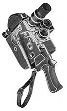
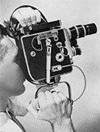
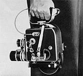
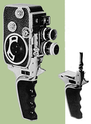
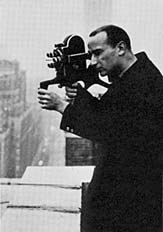
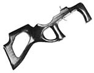
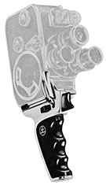
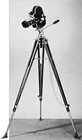
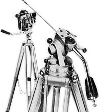
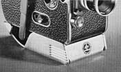

Tripods & Grips

Trigger HandleThe Paillard Bolex trigger handle was available by 1950 for the Bolex H camera. It attaches to the tripod socket of the camera, and allows the release button to be operated from a trigger lever on the grip; a leather wrist strap is attached to the rear. Later models have the Paillard Bolex logo cast into the top side of the grip.
Surefire Grip
1954 -- This unique grip is fitted with a thumb-operated cable release.
The grip is screwed into the tripod socket and held securely by a lug which
fits into an angled slot located on the camera base. The H-16 Supreme and
later model H cameras were designed with this slot already cut into the base.
However, cameras manufactured earlier than 1954 were unable to use this grip
without modification.



Declic HandleThis grip was introduced in 1958 and was designed for use with C-8 and B-8 cameras. It is not compatible with later model 8mm cameras, as the spring-loaded trigger can only operate a front located release button. It's constructed of metal and finished in chrome; finger grips are molded in plastic.

Gunstock GripThe Gunstock Grip was based on a design from Dr. Andras Laszlo. In the Christmas 1951 issue of the Bolex Reporter, he wrote about his filming expedition to Africa and briefly described his self-designed grip. It was intended to provide steady camera support while filming with telephoto lenses by offering "perfect three-point contact between shoulder, cheek bone and left hand". [1]

1 Dr. Andras Laszlo, "Bolex Safari," Bolex Reporter, Christmas 1951, 15.

Declic D Grip, for the D-8LThe Declic D was introduced in 1959, for use with the D-8L. Later 8mm models with release buttons located on the side, including the P1 through P3, can also use this grip. The bottom of the grip contains a 1/4" thread socket that allows it to be mounted to a tripod, as well as permitting the attachment of an accessory wrist strap.

Bolex Precision Tripod1953 -- The first model of tripod available from Paillard Bolex was constructed from aluminum with wooden legs. The pan head contained a built-in spirit level and detachable camera base. Pan and tilt was adjusted with a handle, while separate knobs allowed movement of each to be locked. The wooden tripod legs were kept stationary by a support chain and could be adjusted individually. Fully extended, the height was approximately 57" (64" from the floor to the viewfinder when a camera was attached). A circular Paillard Bolex logo was embossed on the top of the camera base. Priced at $79.50, in the Spring 1953 issue of the Bolex Reporter

Paillard Bolex Tripod HThis model, constructed entirely of aluminum, was introduced in 1959. The first head supplied with this tripod included a "plug-on" style platform which attached to the camera. [2] Later versions (pictured here) included a quick release disc, similar to those found on the Declic H grip. A pan-handle was available to accomodate a 21" cable release and could be adjusted for left or right handed use. The head contains a built-in spirit level and allows 360 degree panning and 135 degree tilt, with an engraved degree scale. This version weighs approximately 8 lbs and 6 ounces, with an extended height of 61" (37" when retracted). Price in 1959: $99.50
2 "What's New At Bolex," Bolex Reporter, Fall 1959, 30.

Flat Base Adapter1956 -- Attached to the underside of 'round' base H-8 and H-16 cameras, this support allowed the camera to be mounted on a tripod or balanced on a flat surface. The base was made of polished aluminum and contoured to the bottom of the camera with open space provided for the winding handle. Felt or cloth lining inside the base protected the camera body from scratches. All bases were adjustable to accept either 1/4" or 3/8" thread tripod screws. Later models were finished in a matte black color to avoid unnecessary light reflection.